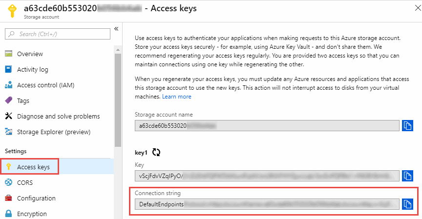

Demander de modifier un document
Demander de modifier un document Modifier sur GitHub
Modifier sur GitHub Guide des contributeurs
Guide des contributeursPréparer la source et la cible
Contributeurs
Vérifiez que votre source et vos cibles répondent aux exigences suivantes.
Mise en réseau
-
La source et la cible doivent disposer d’une connexion réseau au groupe de courtiers de données.
Par exemple, si un serveur NFS se trouve dans votre data Center et qu’un courtier en données est dans AWS, vous devez disposer d’une connexion réseau (VPN ou Direct Connect) entre votre réseau et le VPC.
-
NetApp recommande de configurer la source, la cible et les courtiers de données pour utiliser un service NTP (Network Time Protocol). La différence de temps entre les trois composants ne doit pas dépasser 5 minutes.
Répertoire cible
Lorsque vous créez une relation de synchronisation, Cloud Sync vous permet de sélectionner un répertoire cible existant, puis de créer éventuellement un nouveau dossier dans ce répertoire. Assurez-vous que votre répertoire cible préféré existe déjà.
Autorisations de lecture des répertoires
Pour afficher tous les répertoires ou dossiers d’une source ou d’une cible, Cloud Sync a besoin d’autorisations de lecture sur le répertoire ou le dossier.
- NFS
-
Les autorisations doivent être définies sur la source/cible avec uid/gid sur les fichiers et les répertoires.
- Stockage objet
-
-
Pour AWS et Google Cloud, un courtier de données doit avoir des autorisations d’accès aux objets de liste (ces autorisations sont fournies par défaut si vous suivez les étapes d’installation du courtier de données).
-
Pour Azure, StorageGRID et IBM, les informations d’identification saisies lors de la configuration d’une relation de synchronisation doivent disposer d’autorisations d’objet de liste.
-
- PME
-
Les informations d’identification SMB que vous saisissez lors de la configuration d’une relation de synchronisation doivent disposer d’autorisations de dossier de liste.

|
Le courtier de données ignore les répertoires suivants par défaut : .snapshot, ~snapshot, .copy-load |
exigences du compartiment Amazon S3
Vérifiez que votre compartiment Amazon S3 répond aux exigences suivantes.
Emplacements des courtiers de données pris en charge pour Amazon S3
Les relations de synchronisation qui incluent le stockage S3 nécessitent un data broker déployé dans AWS ou sur votre site. Dans les deux cas, Cloud Sync vous invite à associer le courtier de données à un compte AWS lors de l’installation.
Régions AWS prises en charge
Toutes les régions sont prises en charge, à l’exception des régions de Chine.
Autorisations requises pour les compartiments S3 dans d’autres comptes AWS
Lors de la configuration d’une relation de synchronisation, vous pouvez spécifier un compartiment S3 qui réside dans un compte AWS non associé à un courtier de données.
"Les autorisations incluses dans ce fichier JSON" Doit être appliqué au compartiment S3 pour que un courtier de données puisse y accéder. Ces autorisations permettent au courtier de copier des données depuis et vers la rubrique et de lister les objets dans la rubrique.
Notez les informations suivantes sur les autorisations incluses dans le fichier JSON :
-
<BucketName> est le nom du compartiment qui réside dans le compte AWS non associé à un courtier en données.
-
<RoleARN> doit être remplacé par l’un des éléments suivants :
-
Si un courtier de données a été installé manuellement sur un hôte Linux, RoleARN doit être l’ARN de l’utilisateur AWS pour lequel vous avez fourni des informations d’identification AWS lors du déploiement d’un courtier de données.
-
Si un courtier de données a été déployé dans AWS à l’aide du modèle CloudFormation, RoleARN doit être l’ARN du rôle IAM créé par le modèle.
Vous pouvez trouver le nom ARN du rôle en accédant à la console EC2, en sélectionnant l’instance du courtier de données et en cliquant sur le rôle IAM dans l’onglet Description. La page Résumé de la console IAM qui contient le numéro de référence du rôle doit apparaître.

-
exigences de stockage Azure Blob
Assurez-vous que votre stockage Azure Blob répond aux exigences suivantes.
Emplacements des courtiers de données pris en charge pour Azure Blob
Un courtier en données peut résider en tout lieu lorsqu’une relation de synchronisation inclut le stockage Azure Blob.
Régions Azure prises en charge
Toutes les régions sont prises en charge à l’exception des régions China, US Gov et US DoD.
Chaîne de connexion pour les relations qui incluent Azure Blob et NFS/SMB
Lors de la création d’une relation synchrone entre un conteneur Azure Blob et un serveur NFS ou SMB, vous devez fournir à Cloud Sync la chaîne de connexion du compte de stockage :

Pour synchroniser les données entre deux conteneurs Azure Blob, la chaîne de connexion doit inclure une "signature d’accès partagé" (SAS). Vous avez également la possibilité d’utiliser un SAS lors de la synchronisation entre un conteneur Blob et un serveur NFS ou SMB.
Le SAS doit autoriser l’accès au service Blob et à tous les types de ressources (Service, Conteneur et Objet). Le SAS doit également inclure les autorisations suivantes :
-
Pour le conteneur Blob source : Lecture et liste
-
Pour le conteneur Blob cible : lecture, écriture, liste, ajout et création

|
|
Si vous choisissez d’implémenter une relation de synchronisation continue qui inclut un conteneur Azure Blob, vous pouvez utiliser une chaîne de connexion standard ou une chaîne de connexion SAS. Si vous utilisez une chaîne de connexion SAS, elle ne doit pas être définie pour expirer dans un futur proche. |
Azure Data Lake Storage Gen2
Lors de la création d’une relation de synchronisation incluant Azure Data Lake, vous devez fournir à Cloud Sync la chaîne de connexion du compte de stockage. Il doit s’agir d’une chaîne de connexion standard et non d’une signature d’accès partagée (SAS).
Condition Azure NetApp Files
Utilisez le niveau de service Premium ou Ultra lorsque vous synchronisez des données vers ou depuis Azure NetApp Files. Vous risquez de rencontrer des défaillances et des problèmes de performances si le niveau de service des disques est standard.

|
Consultez un architecte de solutions si vous avez besoin d’aide pour déterminer le niveau de service adapté à vos besoins. La taille et le niveau de volume déterminent le débit pouvant être optimal. |
Exigences relatives à l’emballage
-
Pour créer une relation de synchronisation incluant Box, vous devez fournir les informations d’identification suivantes :
-
ID client
-
Secret client
-
Clé privée
-
ID de clé publique
-
Phrase de passe
-
ID entreprise
-
-
Si vous créez une relation de synchronisation entre Amazon S3 et Box, vous devez utiliser un groupe de courtier de données qui dispose d’une configuration unifiée où les paramètres suivants sont définis sur 1 :
-
Simultanéité du scanner
-
Limite des processus du scanner
-
Simultanéité de transfert
-
Limite des processus de transfert
-
exigences relatives au compartiment de stockage Google Cloud
Assurez-vous que votre rayon de stockage Google Cloud Storage répond aux exigences suivantes.
Emplacements des courtiers de données pris en charge pour Google Cloud Storage
Avec les relations de synchronisation qui incluent Google Cloud Storage, un courtier en données déployé dans Google Cloud ou sur site est nécessaire. Cloud Sync vous guide tout au long du processus d’installation du courtier de données lorsque vous créez une relation de synchronisation.
Régions Google Cloud prises en charge
Toutes les régions sont prises en charge.
Autorisations pour les compartiments dans d’autres projets Google Cloud
Lors de la configuration d’une relation de synchronisation, vous avez le choix entre plusieurs compartiments Google Cloud dans différents projets, si vous fournissez les autorisations requises pour le compte de service du courtier de données. "Découvrez comment configurer le compte de service".
Autorisations d’accès à une destination SnapMirror
Si la source d’une relation de synchronisation est une destination SnapMirror (en lecture seule), des autorisations « read/list » suffisent pour synchroniser les données de la source vers une cible.
Google Drive
Lorsque vous configurez une relation de synchronisation incluant Google Drive, vous devez fournir les éléments suivants :
-
L’adresse électronique d’un utilisateur qui a accès à l’emplacement Google Drive où vous souhaitez synchroniser des données
-
L’adresse e-mail d’un compte de service Google Cloud disposant d’autorisations d’accès à Google Drive
-
Une clé privée pour le compte de service
Pour configurer le compte de service, suivez les instructions de la documentation Google :
Lorsque vous modifiez le champ OAuth Scopes, entrez les étendues suivantes :
-
https://www.googleapis.com/auth/drive
-
https://www.googleapis.com/auth/drive.file
Configuration requise pour le serveur NFS
-
Le serveur NFS peut être un système NetApp ou un système non NetApp.
-
Le serveur de fichiers doit autoriser un hôte de courtier de données à accéder aux exportations via les ports requis.
-
111 TCP/UDP
-
2049 TCP/UDP
-
5555 TCP/UDP
-
-
Les versions NFS 3, 4.0, 4.1 et 4.2 sont prises en charge.
La version souhaitée doit être activée sur le serveur.
-
Si vous souhaitez synchroniser les données NFS à partir d’un système ONTAP, assurez-vous que l’accès à la liste d’export NFS pour un SVM est activé (vserver nfs modify -vserver svm_name -showmount activé).
Le paramètre par défaut de showmount est Enabled commençant par ONTAP 9.2.
Conditions requises pour le ONTAP
Si la relation synchrone inclut Cloud Volumes ONTAP ou un cluster ONTAP sur site et que vous avez sélectionné NFSv4 ou version ultérieure, vous devez activer les ACL NFSv4 sur le système ONTAP. Cette opération est nécessaire pour copier les listes de contrôle d’accès.
Exigences du stockage ONTAP S3
Lorsque vous configurez une relation de synchronisation incluant "Stockage ONTAP S3", vous devez fournir les éléments suivants :
-
L’adresse IP du LIF connecté à ONTAP S3
-
La clé d’accès et la clé secrète que ONTAP est configuré pour utiliser
Configuration requise pour le serveur SMB
-
Le serveur SMB peut être un système NetApp ou un système non NetApp.
-
Vous devez fournir à Cloud Sync des identifiants disposant d’autorisations sur le serveur SMB.
-
Pour un serveur SMB source, les autorisations suivantes sont requises : list et read.
Les membres du groupe opérateurs de sauvegarde sont pris en charge par un serveur SMB source.
-
Pour un serveur SMB cible, les autorisations suivantes sont requises : liste, lecture et écriture.
-
-
Le serveur de fichiers doit autoriser un hôte de courtier de données à accéder aux exportations via les ports requis.
-
139 TCP
-
445 TCP
-
137-138 UDP
-
-
Les versions SMB 1.0, 2.0, 2.1, 3.0 et 3.11 sont prises en charge.
-
Accordez au groupe « administrateurs » les autorisations « contrôle total » aux dossiers source et cible.
Si vous n’accordez pas cette autorisation, le courtier de données peut ne pas disposer des autorisations suffisantes pour obtenir les listes de contrôle d’accès sur un fichier ou un répertoire. Si cela se produit, vous recevrez l’erreur suivante : "erreur getxattr 95"
Limitation SMB pour les répertoires et les fichiers cachés
Une limitation SMB affecte les répertoires et les fichiers masqués lors de la synchronisation des données entre les serveurs SMB. Si l’un des répertoires ou des fichiers du serveur SMB source était masqué par Windows, l’attribut masqué n’est pas copié sur le serveur SMB cible.
Comportement de la synchronisation SMB en raison d’une limitation de la sensibilité au cas
Le protocole SMB n’est pas sensible à la casse, ce qui signifie que les lettres majuscules et minuscules sont traitées comme étant les mêmes. Ce comportement peut entraîner un écrasement des fichiers et des erreurs de copie de répertoire si une relation de synchronisation inclut un serveur SMB et que des données existent déjà sur la cible.
Par exemple, disons qu’il y a un fichier nommé « a » sur la source et un fichier nommé « A » sur la cible. Lorsque Cloud Sync copie le fichier nommé « a » sur la cible, le fichier « A » est remplacé par le fichier « a » de la source.
Dans le cas des répertoires, disons qu’il y a un répertoire nommé "b" sur la source et un répertoire nommé "B" sur la cible. Lorsque Cloud Sync tente de copier le répertoire nommé « b » vers la cible, Cloud Sync reçoit une erreur indiquant que le répertoire existe déjà. Par conséquent, Cloud Sync ne parvient toujours pas à copier le répertoire nommé “b.”
La meilleure façon d’éviter cette limitation est de garantir la synchronisation des données vers un répertoire vide.